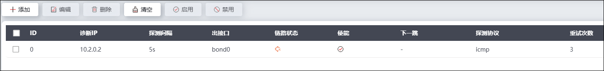
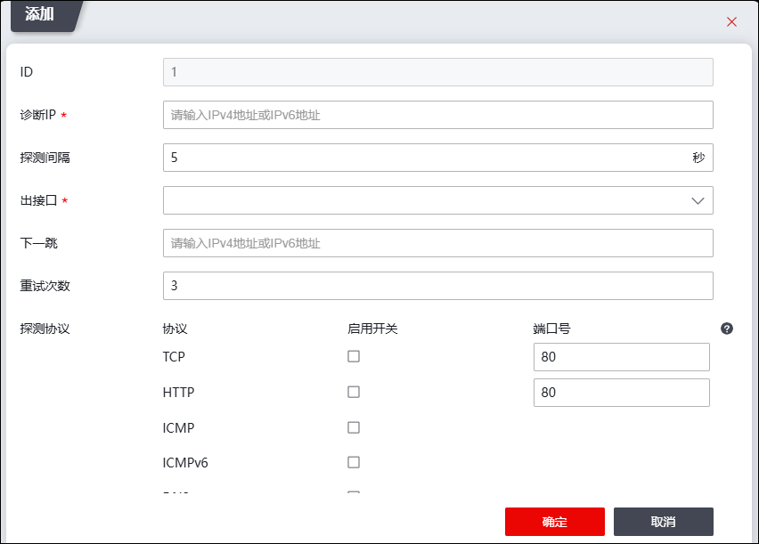

链路探测模块会每隔一定时间周期性地向预先设定的IP发送ping包来检测链路的状况，并会在设备WebUI界面上展示链路的连接检测结果。
NGFW的高可用性（主备模式、负载均衡、连接保护和集群模式）功能依赖于链路探测功能。管理员在配置高可用性功能时，通过引用探测链路的ID号使用探测链路功能，NGFW即可根据IP探测的结果判定某条链路是否可用，确定是否开启主从链路/主从设备的切换进程。关于高可用性的配置请参见 高可用性。
| 步骤1 | 选择 ，界面如下图所示。 |

| 步骤2 | 点击【添加】，弹出“添加”窗口。如下图所示。 |

在设置探测链路时，各项参数的具体说明如下表所示。
参数 |
说明 |
|---|---|
ID |
设置探测链路ID，取值范围：0-9。探测链路通过ID供高可用性功能模块引用，使用IP探测链路功能。 |
诊断IP |
必填项，设置一个链路外部信任的IP地址，通过设定的网络接口定时向该主机发送ping包来探测链路通讯是否正常。 说明： 探测IP必须是在正常状态下防火墙能够ping通的IP地址。 |
探测间隔 |
必填项，设置发送ping探测报文的时间间隔。单位：秒；取值范围：1-3600。 说明： 探测时间间隔为上次探测结束的时间和下一次探测开始之间的时间间隔。 |
出接口 |
选择探测的设备出接口。可以是物理接口、VLAN虚接口、bond口、子接口、ppp0虚接口等，默认为feth0。 说明： 当探测链路在HA中引用时，防火墙上用于IP探测的接口地址必须配置一个区别于当前通信IP且单独配置的一个“非同步地址” IP，否则这个接口相关的路由会因为防火墙变为从状态而down掉。 |
下一跳 |
设置探测报文的下一条地址，支持IPv4/IPv6地址。 |
重试次数 |
设置探测失败的最大重试次数。 |
探测协议 |
勾选指定探测协议，TCP/HTTP可设置协议端口号，默认80。 |
| 步骤3 | 点击【确定】按钮完成探测链路的创建，点击【取消】按钮撤销本次操作。 |
| 步骤4 | 其他 |
勾选已创建的探测链路，点击“ ”，可删除该探测链路；点击“
”，可删除该探测链路；点击“ ”或“
”或“ ”可启用/禁用该探测链路。
”可启用/禁用该探测链路。
点击“清空”可清空已添加的探测链路。